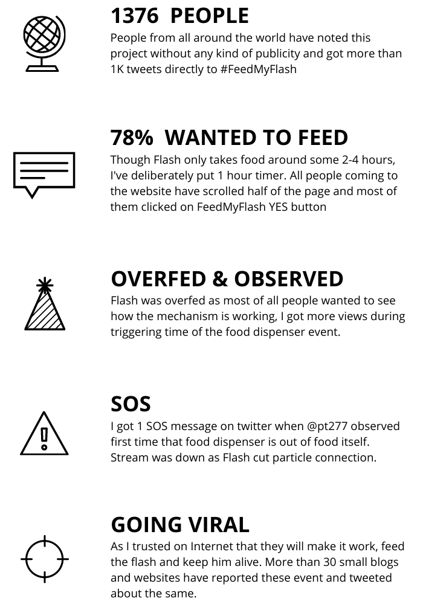

Note: This experiment has ended on July 15, 2016 but you can browse whole project.
Don't forget to checkout making and analytics of #FeedMyFlash
#FeedMyFlash
Hey Internet, I need your small help to feed my pet Flash, a small white rat.
Bro, What's going on?
Hey, I'm hiking near Yuksom. Flash is at home. He needs water and food(peanuts,ants,grains) every 1 hours. Please, Please take care of him. A device I fit in his cage records every single tweet with hashtag (#FeedMyFlash). You need to just tweet (#FeedMyFlashYes) to feed him OR (#FeedMyFlashNo) to not feed him. The mechanism I made and installed above his Home, counts all the tweets for every 1 hour and decides whether to Feed or not to feed Flash. You can also see the Live streaming of his activity.
Why didn't you take Flash with you for hiking?
Actually I really wanted to take him with me but I was skeptic whether he might survive the low oxygen levels or the attacks from the wild animals there, so I decided to keep him safe at home.
Why you can't leave flash on your Girlfriend or friend's house?
I don't have any such friend who likes Rat. Sadly, I am single, don't even have a Girlfriend.
What should I do?
You just need to check and tweet every two hours that there is enough food/water in the basket so that Flash is well fed and won't die of hunger.
But I might be busy all day and I can check only a few times a day, is that OK?
Ya, that's absolutely fine. That's the reason why I requested help of the whole Internet, I am looking for people like you who can just check the live feed, tweet and take care of him.
I want to feed Flash this hour, what should I do?
Just click the button below and tweet "Yes #FeedMyFlash"
Tweet #FeedMyFlash
What if there is enough food in the basket & I don't want to feed Flash this hour?
Ok then just tweet "No #FeedMyFlash"
Tweet #FeedMyFlash
What should I do if Flash is in SOS?
Please, press this Button only in an absolute emergency!!! If 10 people press this button in an hour, It will send a SOS SMS to me and the Animal Help Line. Please use it wisely. Flash sleeps around 5-6 hours a day that doesn’t mean he is dead, so check everything twice before pressing the button.
SOS
In case I want to locate you?
You can track me in realtime. I made a small android app which is installed on my phone, it uploads my location every 10 second to the below public url.
Track My Location
I want to know how you made this thing?
I will publish a medium article as soon as I come back from trip.
Update: You can check making and analytics of #FeedMyFlash
When will you come back?
I will be back in 10 days(probably by 15th July), till then Please take care of Flash.
I want to share my comments/feedback/question to you Neel
Yes. Please tweet me @neelkadia
Anything excited about this experiment?
Yes. Archana from NID Film & Video communication making a film over Flash ane Me
Bye. Thanks Internet!
Making of #FeedMyFlash
I have started with making a block diagram how the whole system will work, understood what I need electronics, wooden cage and so on. I made a wooden cage from waste materials. On other side I used Particle.io as a microcontroller, IFTTT to make communications easy much more easy, Youtube to stream the whole experiment live, MLab and Cloud9 to save and analyze all tweets and finally Twitter to connect with Internet and people.

Basic structure to understand flow

Particle.io in action

Saving all tweets on MLab using Cloud9
Analytics of #FeedMyFlash
